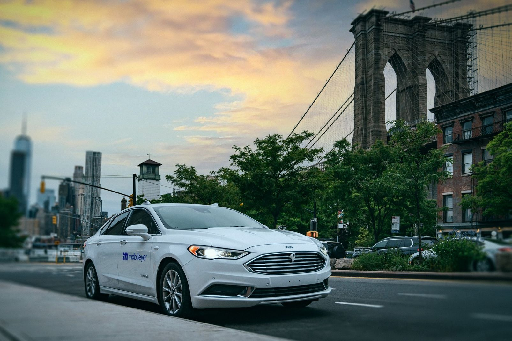
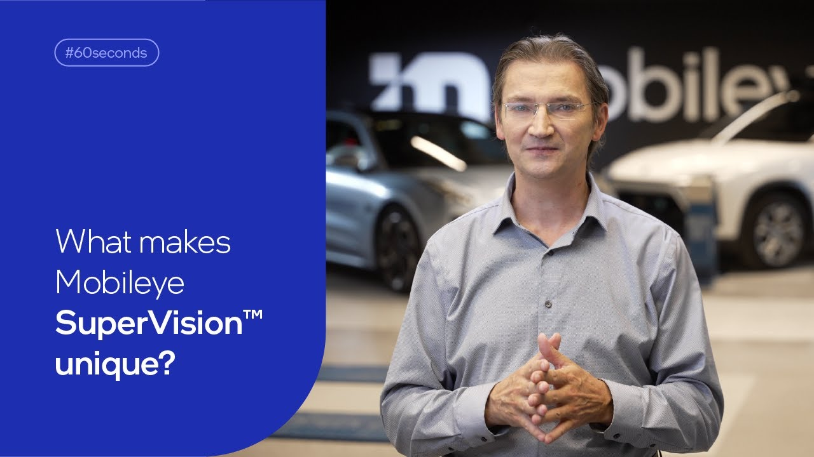
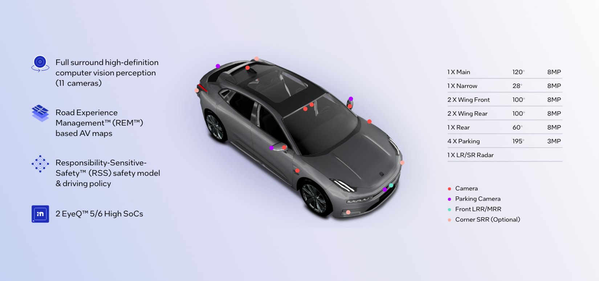
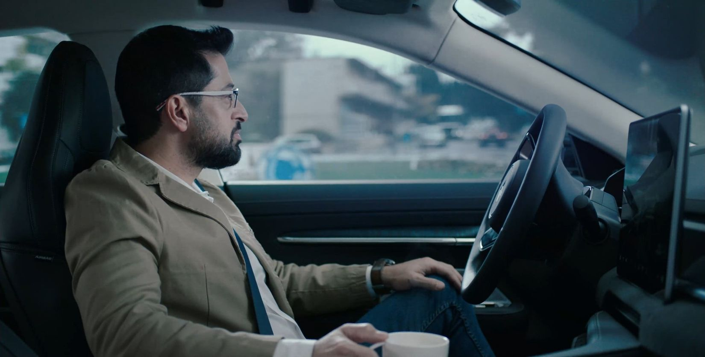

世界中の都市にある数多くの名所の中でも、ブルックリン橋は際立った存在感を放っている。その威厳ある設計や印象的な長さだけでなく、それがモビリティと周辺都市をいかに大きく変革したかという点においても。橋の建設によって、ブルックリンとマンハッタン間の陸路が初めて開かれ、両地区が同一の自治区として統合されるための（文字通りの）基盤が整えられた。
その分断を橋でつないでから1世紀半以上が経った今、私たちは別の分断を前に目を向けている。一方には私たちが数十年にわたって切り拓いてきた運転支援技術があり、もう一方には完全自律モビリティの未来がある。Mobileye SuperVision™は、その間の距離を橋渡しするものだ。

通常の自動車を運転するには、ドライバーが道路を見ながら車両を操舵する必要がある。完全な自動運転車はドライバーをその両方の義務から解放する（そもそも人間のドライバーを必要としない場合もある）。Mobileye SuperVisionでは、道路を見ていなければならないが、ハンドルから手を離してシステムに運転の大部分を任せることができる（その機能が発揮できる運用設計領域（ODD）——つまり自律的に走行可能な道路の種類——の範囲内において）。
Mobileye SuperVisionは本質的に、エルサレムからニューヨーク、パリから東京に至る世界で最も過酷な運転環境の公道で、何年もかけて実際の交通状況の中でテストし磨き上げてきたカメラベース自律走行システムの量産版だ。そして、高度な運転支援システムの開発における約25年の経験から得られた知見がすべて盛り込まれている。その技術はすでに1億2,500万台以上の車両（現在も増加中）に組み込まれている。
こうした豊富な経験に基づき、Mobileye SuperVisionはすべての一般的な道路タイプにおいて時速80マイル（130km/h）までの速度で、目を離さず手は離した状態での標準的な運転操作を実現する。つまり、Mobileye SuperVisionを搭載した車両は、ドライバーの監視下ではあるものの、自律走行車と同様の動作が可能ということだ。

こうした自動運転機能を実現するために、Mobileyeはセンサー、地図、走行ポリシー、プロセッサーなど幅広い技術を開発してきた（そして今も開発を続けている）。
Mobileye SuperVisionはこれらすべてを統合している——11台のカメラ、REM™を活用したMobileye Roadbook™マップ、RSS™ベースの走行ポリシー、そして統合ECUに搭載された最新のEyeQ™システムオンチップ2基がそれだ。さらにOTA（Over-the-Air）アップデートにより、開発が進むにつれてさらなるアップグレードを行う組み込み容量を備えている。
これらすべての要素の総体が、Mobileye SuperVisionを高度な運転支援システムであると同時に、アイズオフソリューション（特定のODD内）および完全ドライバーレスソリューション（車内にドライバーが不要）のベースラインとするものだ。アイズオフ運用に必要なカメラ、地図、走行ポリシーは、すでにアイズオン／ハンズオフシステムの文脈で実証済みであるため、アイズオンからアイズオフへの移行に必要なのは冗長性（アクティブセンサーや追加処理能力など）を加えることだけになる。

この最先端のソリューションはすでに公道を走っており、さらなる普及も予定されている。ローンチパートナーのZeekr（吉利集団傘下）はすでにMobileye SuperVisionを搭載したZeekr 001電気自動車を7万台以上販売している。また同社は最近、Mobileye SuperVisionを採用したZeekr 009も発表した。さらに、吉利傘下の3つのブランドがこのシステムを追加モデルに採用することを発表している。
すでに確定している受注に基づくと、2023年末までにMobileye SuperVisionを搭載した15万台の車両が公道を走る予定だ。そして2026年までには、6つのメーカーの9つの異なるモデル——合計で予想120万台——がこの高度なシステムを世界中の道路で展開することが見込まれている。

今日提供する機能と将来のために確立するベースラインの両面において、Mobileye SuperVisionは運転支援とその先にある自律走行との架け橋として機能する。その到来を告げる今、私たちはイーストリバーを初めて車で渡った時の感覚、そしてそのような画期的な工学的偉業が人類のモビリティの範囲を変革するという約束を垣間見ることができる。